W1 & Q1: Main methodological advance over shared-state methods (MultiGen, MASS), and the differences in state updates, visual conditioning, and distributed execution
Each client estimates the position of its player from the frames it generated, once per block. The estimate uses predicted motion and adds an absolute estimate that limits the accumulated error. For comparison, we re-implemented a MultiGen-style and a MASS-style position update in our framework. At 50–60 s, the position error is 11.42 and 12.55 body widths for these two updates, against 2.64 for WorldCast.

Median position error over clients for each 10-second interval, in body widths. Eq. 4 denotes the position estimate of the state model.

Tracks over one minute of generated video. Open circles mark the start, filled marks the position at 60 s, and grey dots the positions of other players on the same map.
Scene state
The scene state is a memory shared across views: each client publishes the video frames it generates, and every client retrieves the frames that cover its upcoming view. A region generated by one client is therefore rendered consistently by the clients that visit it later. The videos below compare WorldCast with the same model with the scene state switched off at inference; the second video also includes a model trained without scene state.
Details
We re-implemented a MultiGen-style position update in our framework and trained it on the same data and with the same training budget as the state model. A small transformer reads the frame features and controls of the client, the current pose estimate, and the depth ray-cast from the map at this pose, and predicts a displacement. The displacements are accumulated without an absolute estimate. Both updates read the same videos as in Table 6, and their estimates are not fed back to the generator.
From the second 10-second interval onward, the error of Eq. 4 is lower than that of the MultiGen-style update on both generated and recorded video. Compared with the motion head, the pose and map inputs slow the accumulation of error, and the absolute estimate limits it.
MASS advances a typed state on a server from the actions, without reading the generated frames. The MASS-style rows report a position update of this kind re-implemented in our framework, which advances the positions from the previous state and the actions; they are not results of MASS itself.
W2 & Q2: Cross-view agreement in identity, appearance, and actions, and discrepancies between a client's generated motion and the motion extrapolated by other clients
Each client generates its own view, and all clients read the same player state. The same player is therefore rendered at the same place and with the same facing direction and pose in every view.
We trained a classifier on recorded player crops only and applied it to the same player as rendered by two different clients. On the ten-second windows of Table 2 and over whole rounds in closed loop, the agreement on generated video is close to that on the recording.
During a one-second block, the other clients extrapolate player j from its last published position and controls, so all of them use the same position for j. If the motion generated by j's client deviates from this extrapolation, j's client estimates the position from its own generated frames and publishes the corrected position, which all clients adopt from the next block. A discrepancy therefore lasts for at most one block.
Firing
Jump
More
Crouch
More
Two players see each other
Turn
More
Move
More
Weapon switch
First-person view
In each client's own first-person view, a classifier trained only on recorded first-person frames reads the weapon and firing, and compares them with the controls given to the client. The generated view shows the given weapon, and a new weapon after a switch, as often as the recording does, and firing slightly less often.
Details
Crouching is detected by a classifier trained only on recorded player crops. A jump is detected from the vertical rise of the rendered player, with a threshold set on recorded views. As cross-view agreement in firing and weapons is difficult to evaluate quantitatively, we present it qualitatively.
Table 15 reports cross-view agreement in placement: at the median, the viewing rays of two clients to the same player lie less than one body width apart.
W2 & Q3: End-to-end latency including synchronization waits, and the effect of delayed state updates
In our evaluation, the clients advance in lockstep: before generating each one-second block, a client waits until it has received the states of all other clients for the previous block. Table 7 excludes these waits and reports 18.7–23.4 FPS per client. Lockstep is used only in evaluation, for reproducibility and for scoring against the recording; in deployment, a client uses the latest states it has received. With the waits included, the optimized client reaches 24.1–28.2 FPS with the full decoder of Table 7 and 30.7–38.9 FPS with a small display decoder. The optimizations are purely engineering and do not change the generated video.
The latency from a key press to its effect on the player's own screen is 0.73 s at the median with the small display decoder and 0.94–0.95 s with the full decoder of Table 7. Most of this latency comes from waiting for the next block, as controls are read once per block.

Optimized client
Engineering optimizations. The following optimizations do not change the generated video.
- The session is warmed up before timing, and each client is pinned to its own CPU cores.
- Clients exchange messages over direct connections instead of a shared file system, and a waiting client resumes as soon as a message arrives.
- The depth map of a client is sent together with its memory entry, so the other clients do not recompute it.
- Memory retrieval projects the cameras on four threads, and the matrix products are serialized so that the results remain identical.
- Retrieval projects only the image tiles that can fill a pixel that is still missing.
- A client reprojects its own frames on a background thread.
- Latents received from other clients are cached instead of being read again.
- The frames of a block are passed to the decoder before the remaining bookkeeping of the block finishes.
- GPU work that requires only the client's own data starts as soon as the block is committed.
Display decoder. The small display decoder replaces the full decoder of Table 7 for display only, and the generated latents are identical. Measured against the recording of the same window, the frames of the two decoders are equally close to it.
Details
Controls are read once per one-second block, before it is generated (App. B). A key press during a block therefore takes effect in the next block: it waits 0.50 s at the median, and the first frame of that block follows within 0.2 s.
Tables
The tables below follow the order of the reply and are also included in Appendix H of the revised paper.
W1 & Q1: Main methodological advance over shared-state methods (MultiGen, MASS), and the differences in state updates, visual conditioning, and distributed execution
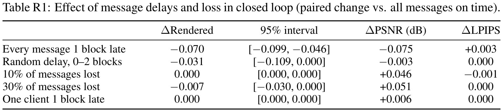
![Table R1b: State model compared with MultiGen-style and MASS-style position updates re-implemented in our framework, on the same clients. Position error and height gap are reported at 50–60 s in body widths, and lower is better. The height gap is the difference between the camera height estimated from the depth of the generated frame and the camera height given by the state, and requires no recording. Position and the first Height gap column use video generated with recorded positions; the other two columns use closed-loop runs. Depth is the depth agreement between closed-loop clients over whole rounds, and higher is better.](../assets/img/tab/cvu7-table-01b.png)
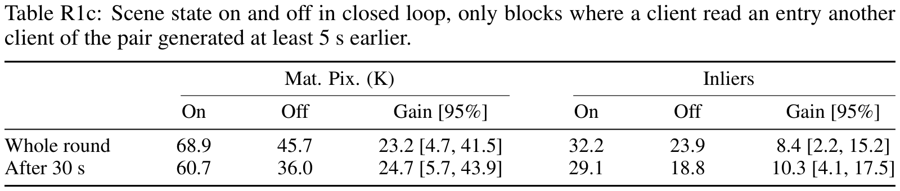
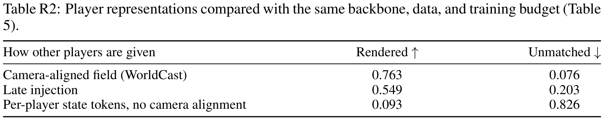
W2 & Q2: Cross-view agreement in identity, appearance, and actions, and discrepancies between a client's generated motion and the motion extrapolated by other clients
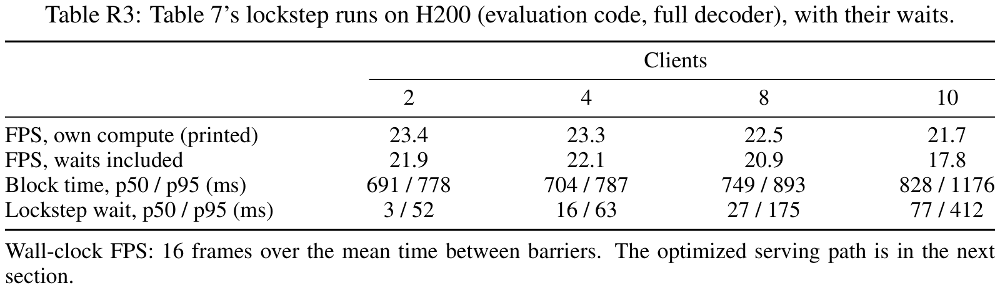
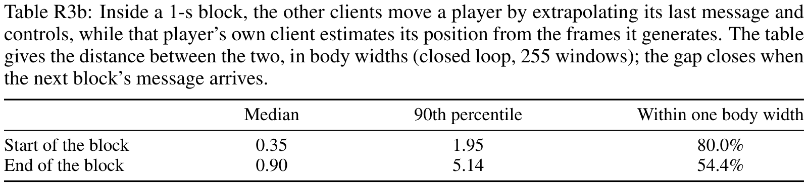
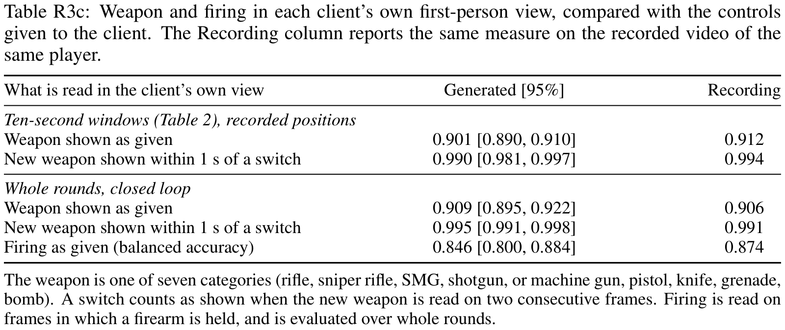
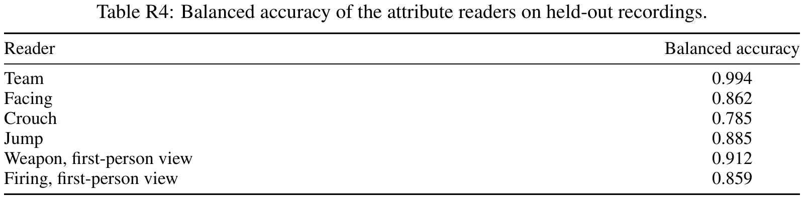
W2 & Q3: End-to-end latency including synchronization waits, and the effect of delayed state updates
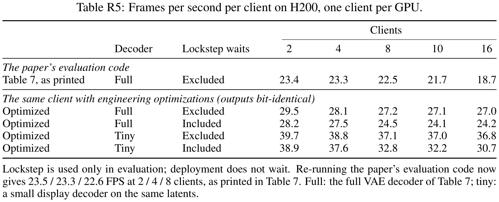

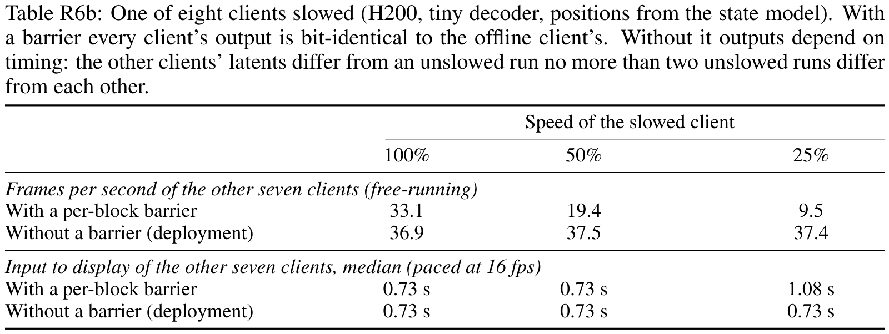
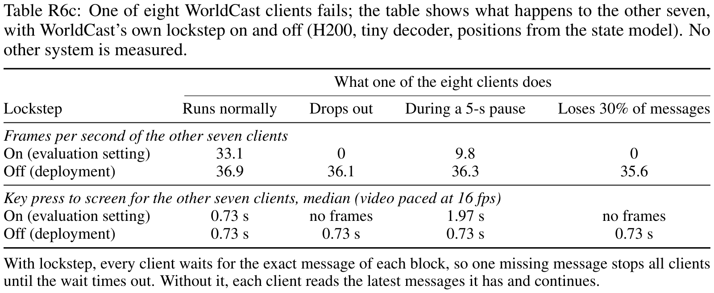
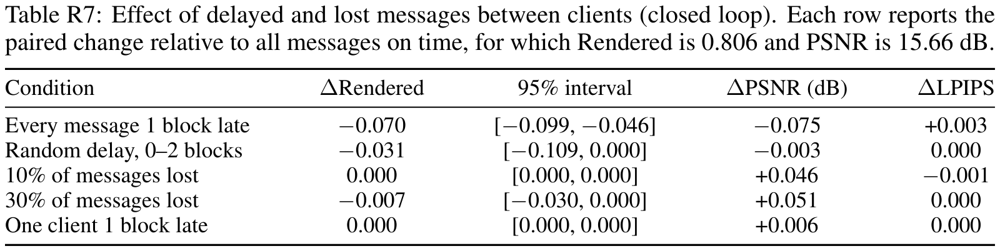
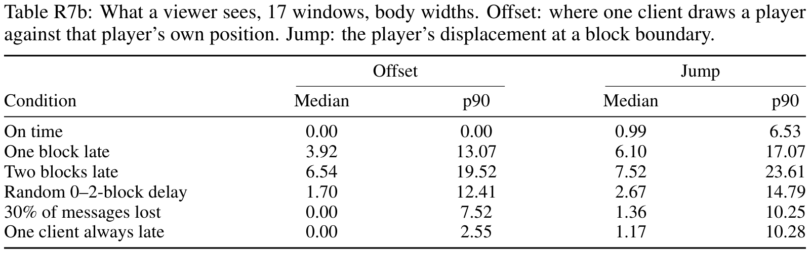
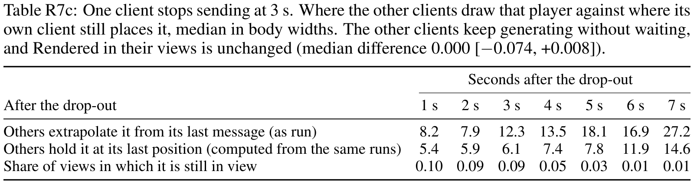
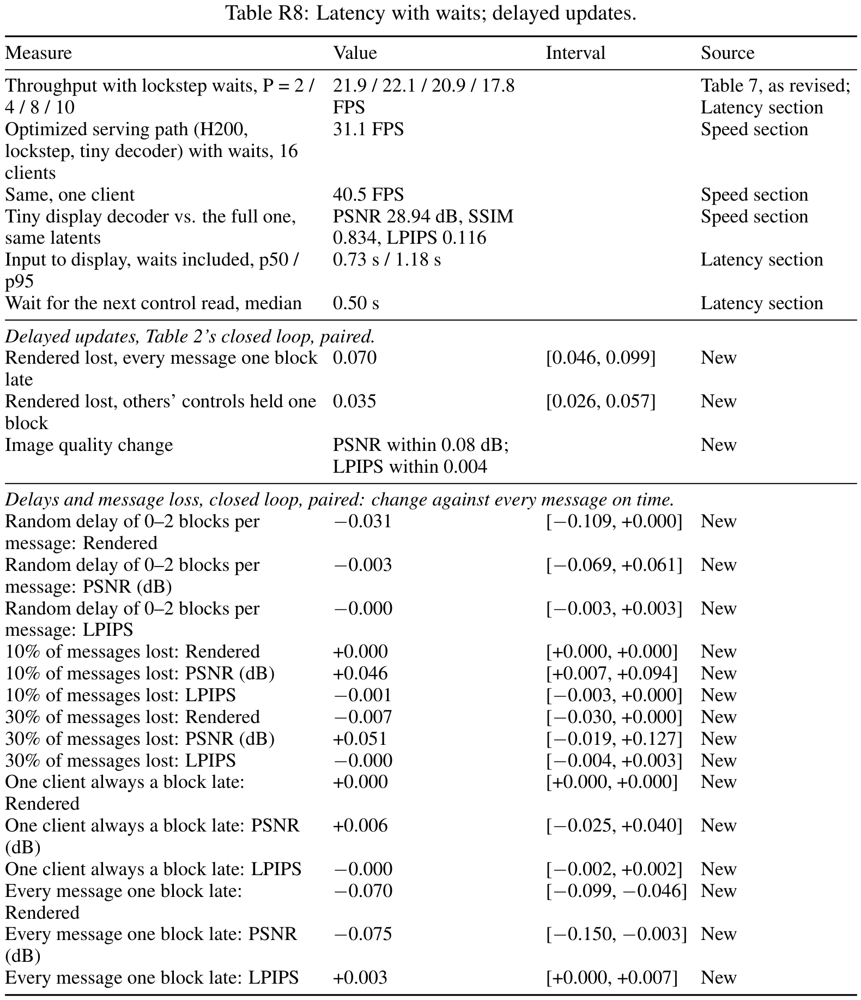
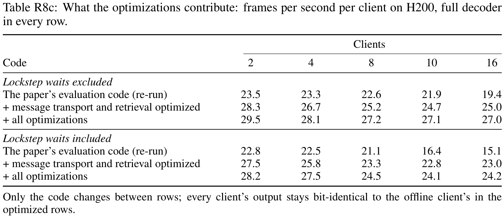